About Me
I am an Associate Professor at the School of Software, Shandong University, where I also earned my B.S. (2014) and Ph.D. (2020) in Engineering under the supervision of Prof. Yilong Yin. My international research experience includes visiting Prof. Shuo Li's group at Western University (2016), spending 18 months (2017-2019) at the University of Wisconsin–Madison with Prof. Vikas Singh (CSC funded), and completing a research internship at the Inception Institute of Artificial Intelligence (IIAI), UAE, under the mentorship of Prof. Ling Shao (IEEE Fellow).
My research broadly focuses on machine learning and computer vision. My recent interests include generative modeling, trustworthy learning, and human–AI collaborative learning.
News
- 2026.08Our paper, "DeferredSeg: A Multi-Expert Deferral Framework for Medical Image Segmentation", was accepted by Pattern Recognition Journal. Congrats to Qiuyu Tian.
- 2026.08Our paper, "Editing Rules in LLMs Requires More Than a Localized Update", was accepted by EMNLP 2026. Congrats to Yating Wang.
- 2026.07Zichen and I attended ICML 2026, Seoul, South Korea. What a massive turnout!
- 2026.06Our paper, "Holistic Optimal Label Selection for Robust Prompt Learning under Partial Labels", was accepted by ECCV 2026. Congrats to Yaqi Zhao.
- 2026.05Two papers, "Riemannian MeanFlow for One-Step Generation on Manifolds" et al., were accepted by ICML 2026. Congrats to Zichen Zhong and Lehui Li.
- 2025.11Dr. Nick Tobin from Karolinska Institute visited our group for academic exchange.
- 2025.11Gave a talk on “Human–AI Collaborative Methods and Applications in Medical Decision-Making” at the 8th SDU–KI Joint Symposium.
- 2026.08Ren Wang attended IJCAI 2025, Satellite Event in Guangzhou.
- 2025.06Attended CVPR 2025, Nashville, Tennessee, United States. An unforgettable trip, marred by frustrations.
- 2025.04Two papers, "Improving Generalization in Meta-Learning via Meta-Gradient Augmentation" et al., were accepted by IJCAI 2025. Congrats to Ren Wang and Shilu Yuan.
- 2025.02Our paper, "Seqmvrl: A sequential fusion framework for multi-view representation learning", was accepted by CVPR 2025. Congrats to Ren Wang.
- 2024.09Gave a talk on “SSL-based noisy label learning and beyond” at Guilin University of Electronic Technology.
- 2024.07Our paper, "Variational rectification inference for learning with noisy labels", was accepted by IJCV. Congrats to all co-authors.
- 2023.12Awarded the title of Young Expert of Taishan Scholars in Shandong Province.
Selected Publications
Please refer to Google Scholar for the complete list. (# denotes equal contribution, * denotes corresponding author.)
Generative Models
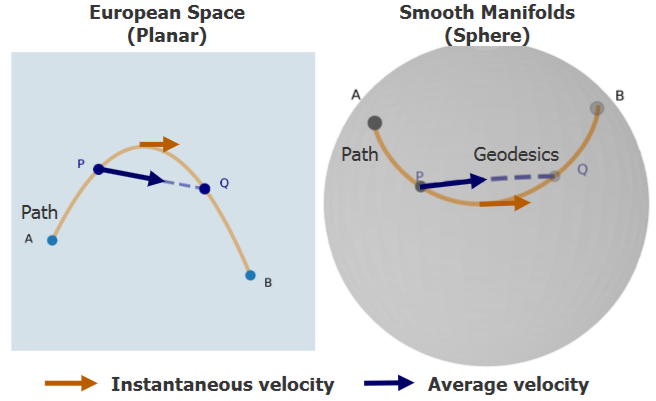
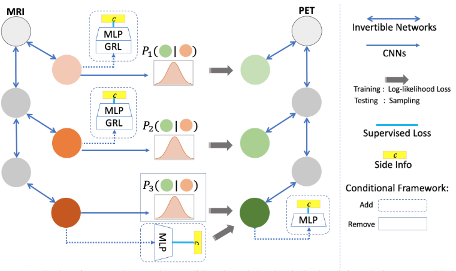
Trustworthy & Collaborative Learning
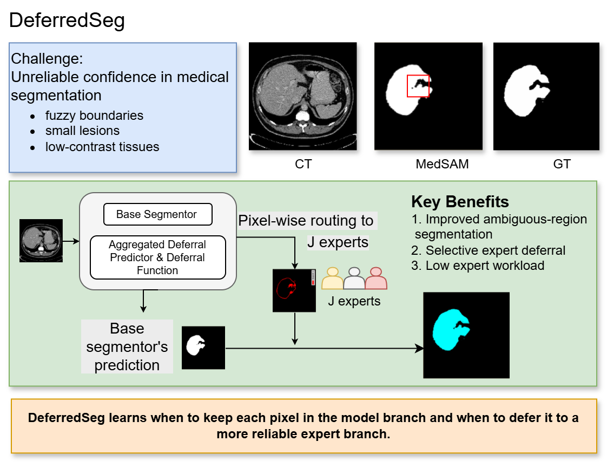
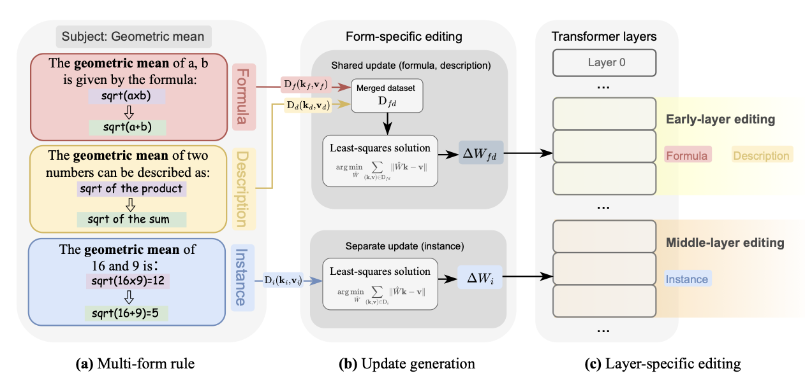
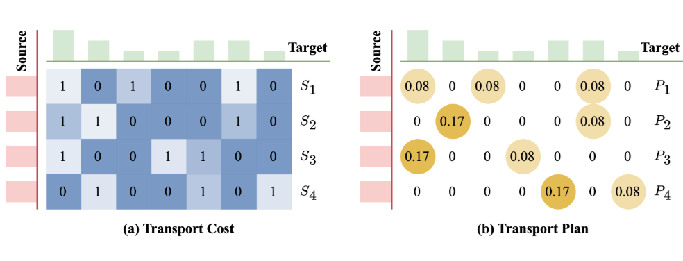
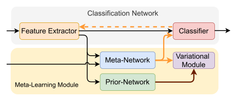
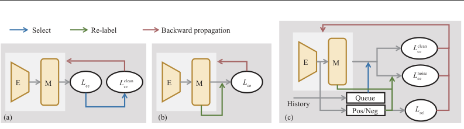
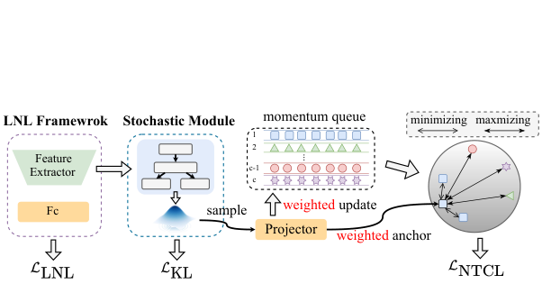
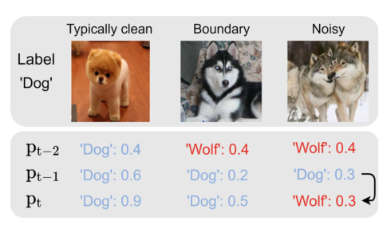
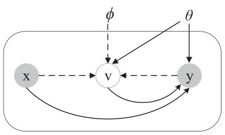
Representation & Meta-Learning
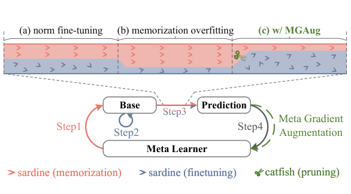
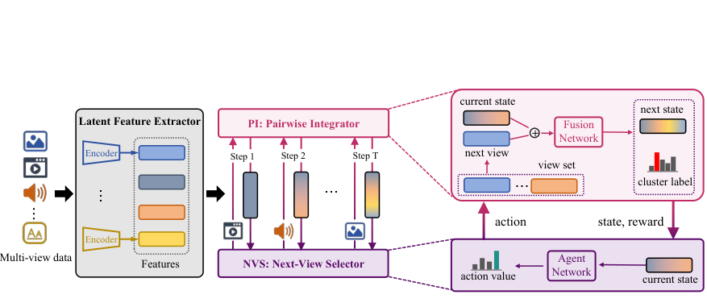
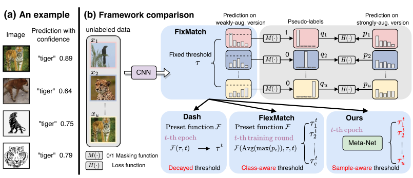
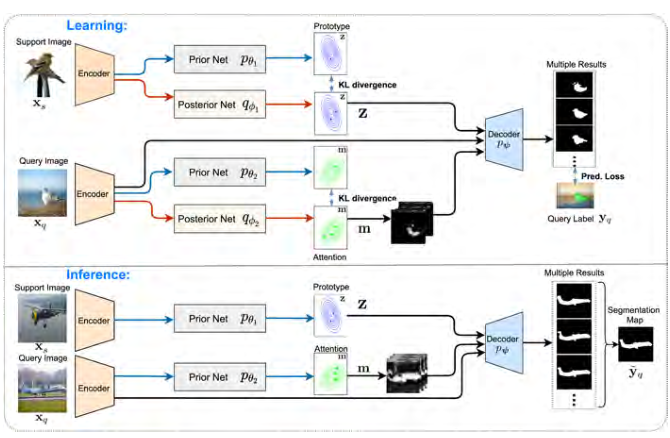
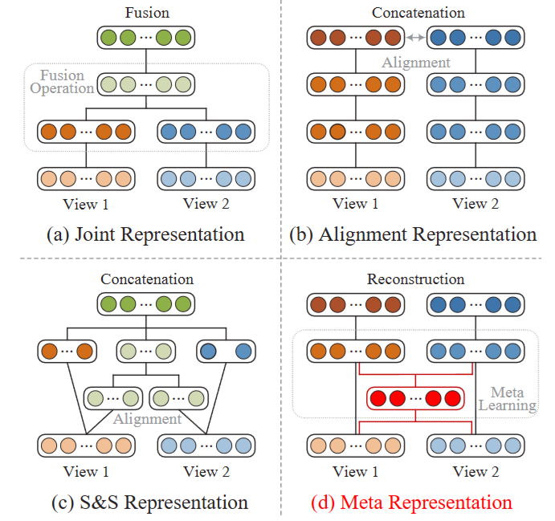
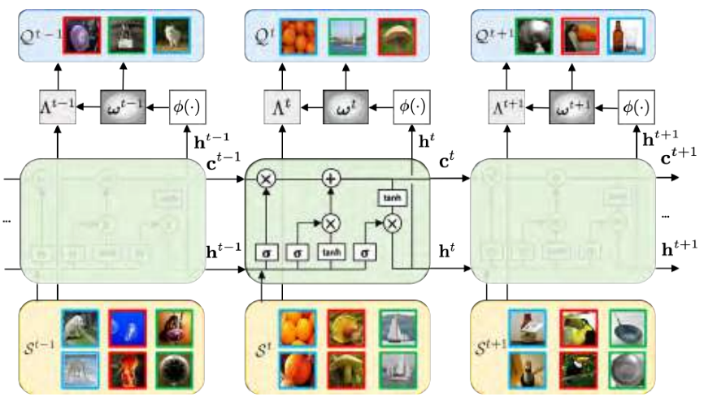
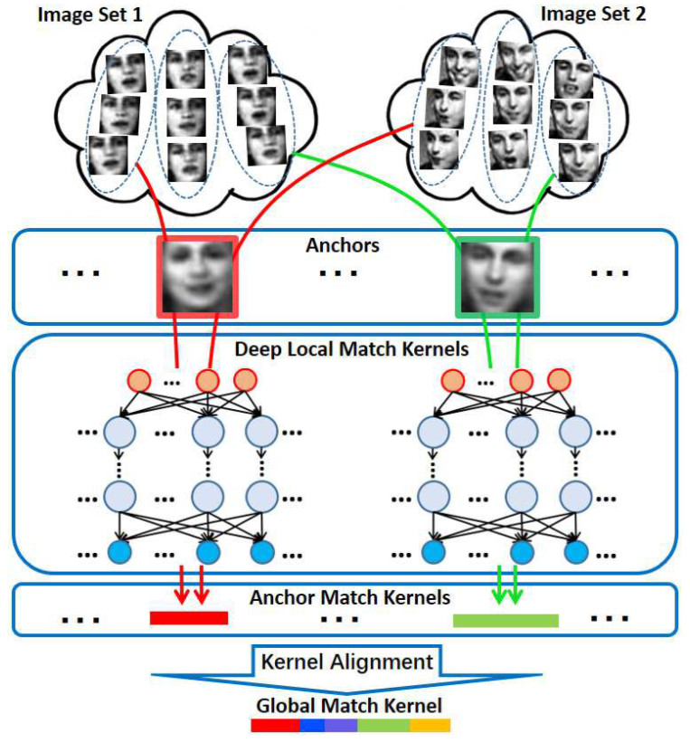
People
Current Students
Alumni
Education & Experience
- 2020PhD in Engineering, Shandong University (advisor: Prof. Yilong Yin)
- 2014Bachelor in Engineering, Shandong University
- 2019Research Intern, Inception Institute of Artificial Intelligence (IIAI), UAE (mentor: Prof. Ling Shao)
- 2018–2019Jointly trained PhD student, University of Wisconsin–Madison (advisor: Prof. Vikas Singh; supported by CSC)
- 2016Jointly trained PhD student, Western University, Canada (advisor: Prof. Shuo Li)
Honors & Awards
- 2024 — Shandong Provincial Science and Technology Progress Award.
- 2023 — Young Expert of Taishan Scholars, Shandong Province.
Professional Services
Conference Reviewer / Program Committee
Journal Reviewer
Courses
- 人工智能基础 Foundations of AI2025–2026
- 高级机器学习 Advanced Machine Learning2024–2025
- 数理逻辑 Mathematical Logic2023–2024
- 编译原理与技术 Compilation Principles and Techniques2024–2026